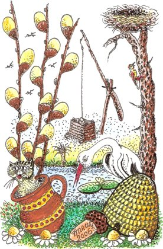

Proljeće
Spring

Okopnio snijeg,proljeće je stiglo.Sluti se toplina sunca.Trava polako rosu pije,djetlić već drvo kljuca.
The snow has thawed,and spring is here.One senses the warmth of the sun.The grass drinks slowly of the dew,the woodpecker's tapping has begun.
Na grani hrasta ispod lišćaSkrivena čuči ševa:djetliću malom,dok drvo kljuca,ljubavnu pjesmu pjeva.
On an oak branch, under the leaves,a lark sits crouching, hid from view:to the little woodpecker,as he taps the tree,she sings her love song through.
Mušice lete i pčele zuje,posvuda miriše cvijet.Da ptićima svojimhranu nađu,krenule laste na let.Brižljiva majka roda leti,malima nosi hranu,a vrabac živka,po krovu skače,veseli se novom danu.
Gnats are flying, bees are humming,flowers smell sweet everywhere.To find some foodfor their young chicks,off fly the swallows through the air.The caring mother stork is flying,bringing food to feed her young,and the sparrow chirps,hopping on the roof,glad the new day has begun.
Cvrčak svoju pjesmu svirau travi negdje skriven.Žaba krekeće,u nebo gleda:obzor suncem obliven.
The cricket plays his songin the grass, somewhere out of sight.The frog is croaking,gazing at the sky:the skyline bathed in light.
Zatim u žaru zapadu idejoš jedan proljetni dan.Zvijezde na nebuveć se pale,slatki nam donose san.
Then, glowing, off into the westgoes one more day of spring.The stars up in the skyare lighting up already,sweet sleep to us they bring.